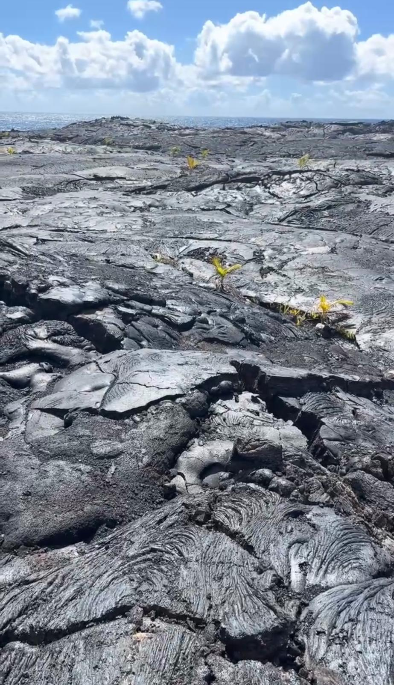
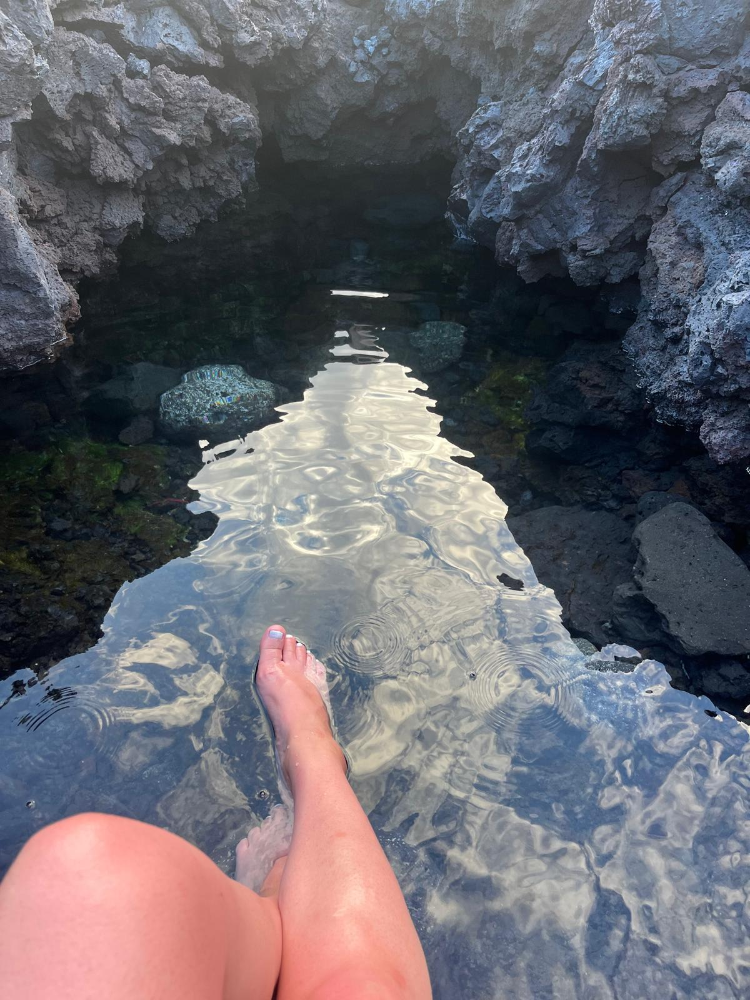
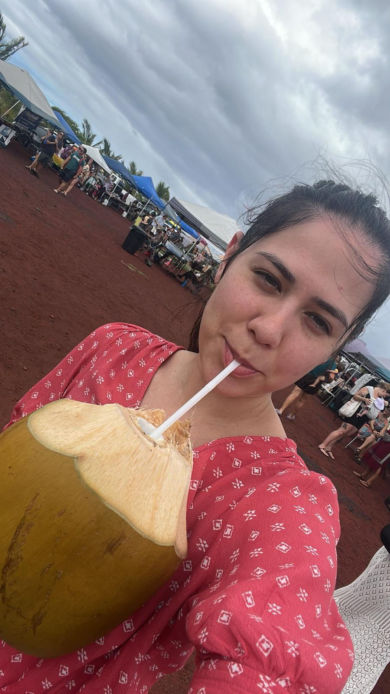
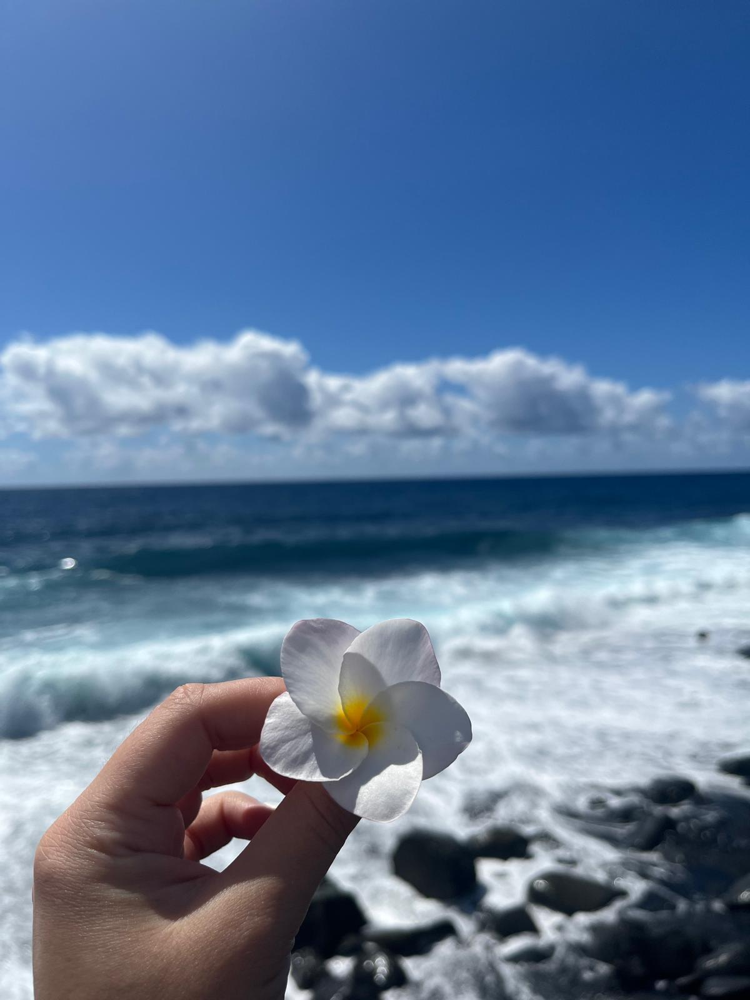

Gallery





When people talk about their favorite vacation spots, they usually mention all the places they have been and explain why one is their favorite. In my case, I have not traveled much at all.
As a child, my vacations were always at my grandparents' houses. Do not get me wrong, I liked being there. But back then, I thought that was what a vacation was: spending the whole summer at your grandparents' place. Now I realize that the vacation was not really mine, it was my parents' because they got to have three months without me and my older brother. What a dream for parents! Haha.
With a tight budget, I never imagined Hawaii as an option. But thanks to a friend's suggestion and free accommodation, I found myself on the Big Island, ready for an adventure.
Unlike touristy spots, Pahoa was peaceful and raw. I spent my days reading on dry lava, watching waves, and listening to the ocean. One night, I even slept on the warm lava rock—an unforgettable experience.
I also visited natural hot ponds formed by volcanic eruptions and enjoyed fresh tropical fruits like coconut and papaya, which tasted completely different from store-bought ones.
This was more than a vacation; it was a chance to connect with nature, meet locals, and experience life on a volcanic island. It was peaceful, simple, and exactly what I needed.